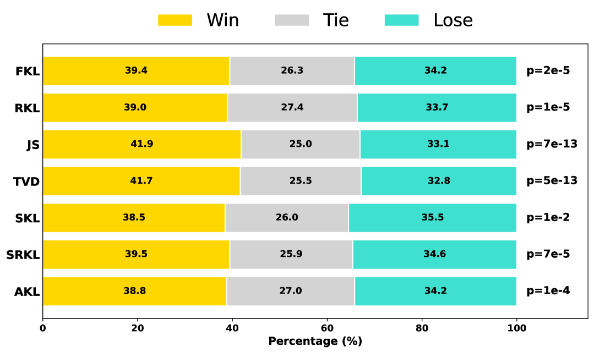

Abstract
Large language models (LLMs) offer impressive performance but are impractical for resource-constrained deployment due to high latency and energy consumption. Knowledge distillation (KD) addresses this by transferring knowledge from a large teacher to a smaller student model. However, conventional KD, notably approaches like Forward KL (FKL) and Reverse KL (RKL), apply uniform divergence loss across the entire vocabulary, neglecting token-level prediction discrepancies. By investigating these representative divergences via gradient analysis, we reveal that FKL boosts underestimated tokens, while RKL suppresses overestimated ones, showing their complementary roles. Based on this observation, we propose Token-wise Distillation (ToDi), a novel method that adaptively combines FKL and RKL per token using a sigmoid-based weighting function derived from the teacher-student probability log-ratio. ToDi dynamically emphasizes the appropriate divergence for each token, enabling precise distribution alignment. We demonstrate that ToDi consistently outperforms recent distillation baselines using uniform or less granular strategies across instruction-following benchmarks. Extensive ablation studies and efficiency analysis further validate ToDi's effectiveness and practicality.
Motivation
Conventional knowledge distillation methods apply either Forward KL (FKL) or Reverse KL (RKL) uniformly across the entire vocabulary at each decoding step. However, FKL and RKL have fundamentally different gradient behaviors that make each one better suited for different token-level situations.

Figure 1. Token-wise learning signals for KL-based distillation objectives. Conventional methods apply a fixed divergence across the entire vocabulary, while ToDi dynamically blends FKL and RKL per token based on the teacher–student probability ratio.
Through theoretical gradient analysis, we show that when $p > q_\theta$, FKL produces gradient magnitudes greater than 1, strongly pushing the student upward. Conversely, when $q_\theta > p$, RKL delivers strong corrective signals while FKL provides only weak negative values. This complementary structure motivates a token-level adaptive combination strategy.

Figure 2. Toy example demonstrating the gradient behavior of FKL and RKL. In regions where $p > q$, FKL provides stronger learning signals; where $q > p$, RKL takes over.
Method
ToDi adaptively combines FKL and RKL at the token level using a sigmoid-based weighting function. For each token position $t$ and vocabulary item $i$, the token-wise weight is computed as:
When $p > q_\theta$, $\alpha_{t,i}$ exceeds 0.5, placing more weight on FKL. When $q_\theta > p$, $\alpha_{t,i}$ falls below 0.5, shifting emphasis to RKL. The final token-wise distillation loss is:
A stop-gradient operator is applied to $\alpha_{t,i}$ during backpropagation, ensuring the weights serve purely as adaptive coefficients without interfering with gradient flow. This design maintains the same computational complexity as standard FKL or RKL — $\mathcal{O}(V)$ per token — with no additional overhead.

Figure 3. Illustration of ToDi. For each vocabulary token, FKL and RKL are dynamically combined via a token-specific weight $\alpha_{t,i}$. The weight smoothly increases FKL emphasis when $p > q_\theta$ and shifts to RKL when $q_\theta > p$.
Results
We evaluate ToDi on two student-teacher pairs — GPT2-120M distilled from GPT2-1.5B, and TinyLLaMA-1.1B distilled from LLaMA2-7B — across five instruction-following benchmarks (DollyEval, S-NI, UnNI, SelfInst, VicunaEval). ToDi consistently achieves the highest ROUGE-L scores across all settings.

Table 1. ROUGE-L scores on five instruction-following benchmarks. ToDi outperforms SFT, FKL, RKL, and AKL baselines under both student-teacher configurations.
To further validate generalizability, we evaluate ToDi across diverse teacher models — GPT2, LLaMA2, OLMo2, Qwen2.5, and Gemma3. ToDi consistently achieves the best ROUGE-L scores across all teacher configurations, demonstrating that token-wise divergence control is robust to different model families and scales.

Table 2. ROUGE-L scores across five teacher model configurations. ToDi (Ours) consistently outperforms all baselines regardless of the teacher model used.
Beyond automatic metrics, we conduct GPT-4 pairwise evaluations to assess response quality. ToDi achieves statistically significant wins ($p < 0.001$) over all baselines, confirming that token-wise divergence control leads to more human-preferred outputs.

Figure 4. GPT-4 pairwise evaluation of TinyLLaMA models trained with various KD methods on 5,000 UnNI examples. Bars show Win/Tie/Lose proportions; ToDi achieves statistically significant wins ($p < 0.001$) over all baselines.
BibTeX
@inproceedings{jung-etal-2025-todi,
title = "{T}o{D}i: Token-wise Distillation via Fine-Grained Divergence Control",
author = "Jung, Seongryong and Yoon, Suwan and Kim, DongGeon and Lee, Hwanhee",
booktitle = "Proceedings of the 2025 Conference on Empirical Methods in Natural Language Processing",
year = "2025",
publisher = "Association for Computational Linguistics",
url = "https://aclanthology.org/2025.emnlp-main.409",
}